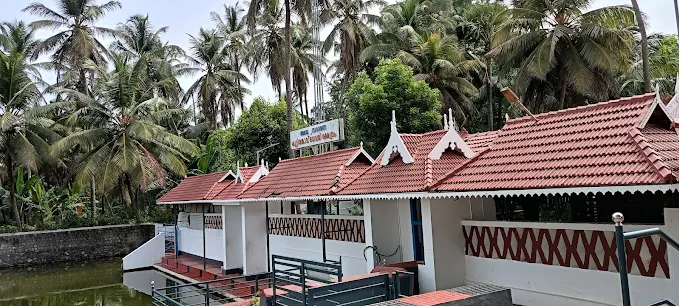
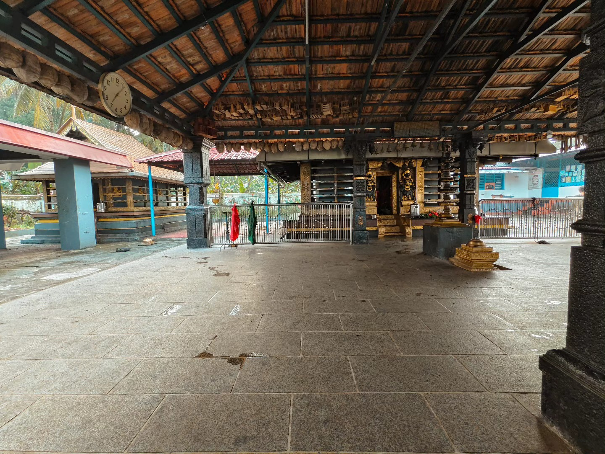
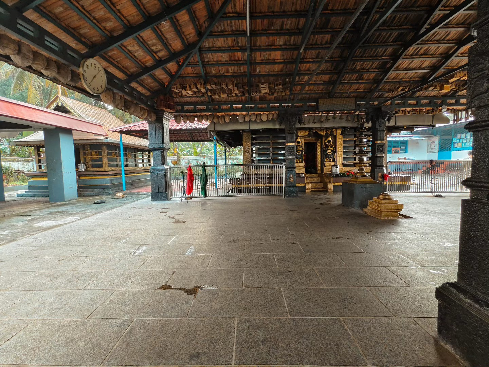
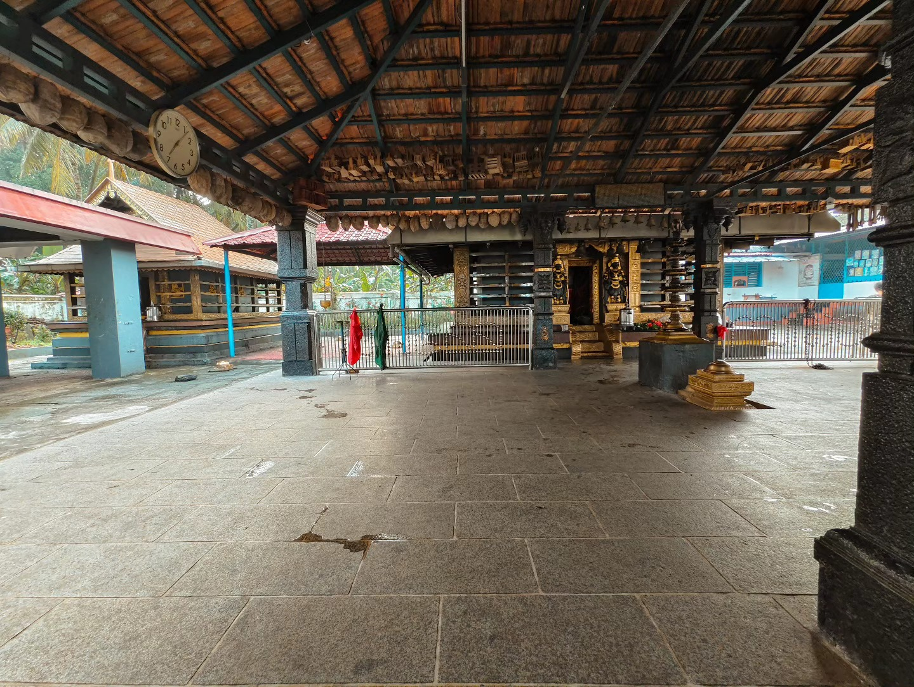
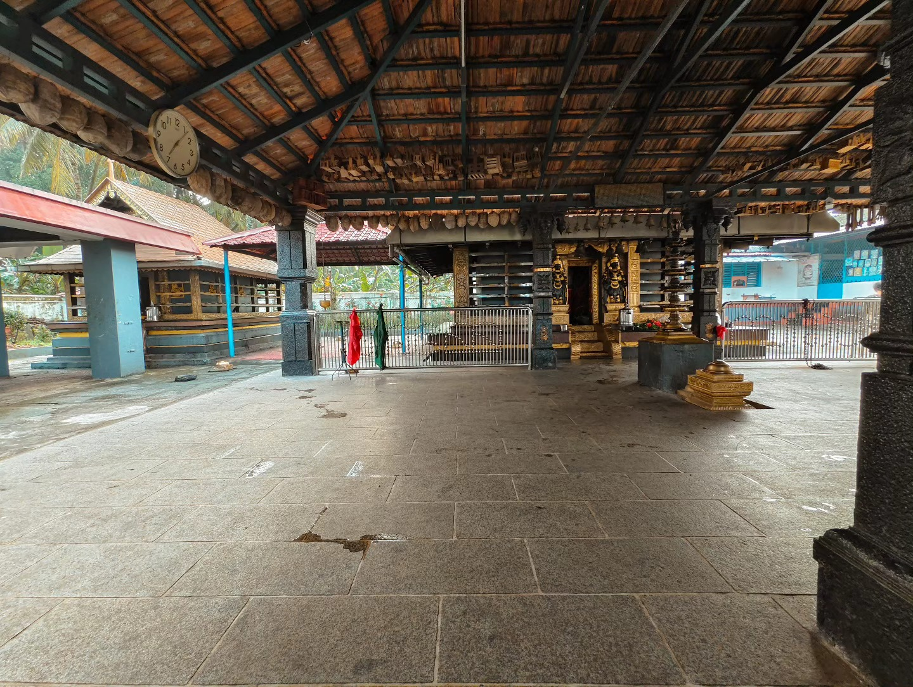

📸 ഫോട്ടോ ഗ്യാലറി


 


കേരളത്തിന്റെ ഹൃദയഭാഗത്ത് സ്ഥിതിചെയ്യുന്ന ദേവീഭക്തിയാൽ നിറഞ്ഞ ഒരു വിശുദ്ധ ക്ഷേത്രമാണ്. ഭഗവതിക്ക് സമർപ്പിച്ചിരിക്കുന്ന ഈ ക്ഷേത്രം ദൈവിക ഊർജ്ജം പകരുന്നതോടൊപ്പം കേരളത്തിന്റെ പരമ്പരാഗത വാസ്തുശില്പത്തിന്റെ മഹത്വവും പ്രതിഫലിപ്പിക്കുന്നു. പച്ചപുല്ലുകളും തേങ്ങാക്കാടുകളും ചുറ്റി നിൽക്കുന്ന ഈ ക്ഷേത്രം, ഓരോ വർഷവും ആയിരക്കണക്കിന് ഭക്തർക്കും ആത്മശാന്തിയും ആത്മീയ അനുഭവവും പകരുന്ന ഒരു ദൈവിക ആലയമായി നിലകൊള്ളുന്നു.
ക്ഷേത്രത്തിലെ പൂജകളും ഉത്സവങ്ങളും നൂറ്റാണ്ടുകളായി നിലനിൽക്കുന്ന ആചാരങ്ങളെയും ഭക്തിയെയും ഐക്യത്തെയും ദൈവിക സ്ത്രീശക്തിയെയും ആഘോഷിക്കുന്നു. ഇവിടെ എത്തുന്ന ഓരോ ഭക്തനും ദൈവമാതാവിന്റെ അനുഗ്രഹവും മനശാന്തിയും ഉൾക്കൊണ്ട് മടങ്ങുന്നു.
5:30 AM — ജപവും അർപ്പണങ്ങളും ഉൾപ്പെടുത്തിയ വിശുദ്ധ രാവിലെ ചടങ്ങ്.
8:00 AM — കുറ്റിയൻകാവ് ഭഗവതിയുടെ അനുഗ്രഹങ്ങൾ പ്രാർത്ഥിച്ച് നടത്തപ്പെടുന്നു./p>
12:00 PM — നൈവേദ്യവും അതിനന്തര പ്രസാദവും അർപ്പിച്ച് നടത്തപ്പെടുന്നു.
6:30 PM — ദീപങ്ങൾ, ഭജനങ്ങൾ, ഭക്തി എന്നിവയോടെ ആരതി.

Address: Kuttiyankavu Bhagavathy Temple, Thrissur District, Kerala - 680xxx
Phone: +91 99954 09990
Email: info@kuttiyankavutemple.org
Visiting Hours: 5:00 AM – 9:00 PM (All days)